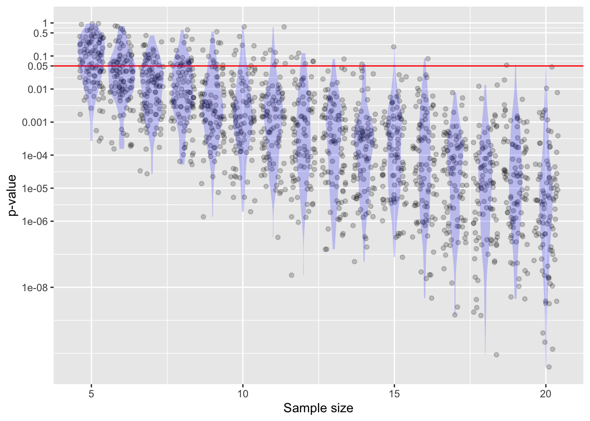

print(dag01)x ~ exo()
y ~ 1.5 * x + 4 + exo()\[\newcommand{\Ptest}{\mathbb{P}} \newcommand{\Ntest}{\mathbb{N}} \newcommand{\given}{\ |\!\!|\ }\]
Lesson -Chapter 19 presented an example about the effect of COVID on childhood development. We quoted from a news article from The Economist summarizing one study that looked at infant and toddler vocal interactions with parents:
“During the pandemic the number of such "conversations" declined. ….”[g]etting lots of interaction in the early years of life is essential for healthy development, so these kinds of data "are a red flag".”
Part of statistical thinking involves replacing vague words like “lots” and “essential” with quantitative measures. The next score of Lessons introduced methods for extracting quantitative information from data and ways to present meaningful information to human decision-makers.
This Lesson is about one way of formatting information—statistical significance—that is widely used throughout the sciences and appears widely in the press, but which often obscures much more than it reveals. The “statistically significant” format appears, for instance, in a statement from the research report on which the above quote was based.
“Children from the COVID-era sample produced significantly fewer vocalizations than their pre-COVID peers.”
The link between “fewer vocalizations” and “healthy development” is based on a highly cited research paper1 which states that “The amount of parenting per hour and the quality of the verbal content associated with that parenting were strongly related to the social and economic status of the family and the subsequent IQ of the child,” and characterizes correlation between IQ and a toddler’s exposure to verbal content as “highly significant.”
The magnitude of the link between vocalizations and IQ is expressed by an effect size which has units of IQ-points per vocalization-point. Many researchers prefer, however, to “standardize” both variables so that they have mean 0 and a standard deviation of 1 with no units. Hart & Risley reported an effect size of 0.63 for standardized IQ to standardize vocalization score.2
Imagine that the social importance of a finding such as in Hart and Risley is that it introduces the prospect of a child-development intervention where parents are trained and encouraged to improve the level of verbal interaction with their infants and toddlers. The improvement in verbal interaction would—if the effect size reported is truly a causal connection—create an improvement in IQ.
The impact of educational interventions is often measured in units of “SDs.” For instance, if school reading scores have a mean of 100 and a standard deviation of 15, then an intervention—giving out books for kids to read at home, say—which increases the mean score to 105 would have an effect size of 1/3 SD, since the mean gain (5 points) is one-third the standard deviation of the reading scores. Examination of interventions in education indicates that the median effect size is 0.1 SD and the 90th-percentile is at 0.4 SDs.
Suppose we are mildly optimistic about the impact of an intervention to improve parent-toddler verbal interaction and imagine that the effect size might be around 0.2 SD. This improvement would then be filtered through the Hart & Risley effect size (0.63), to produce a standardized change in IQ of \(0.2 \times 0.63 = 0.13\) SD. Consider the impact this would have on a child at the 10th-percentile of IQ. After the intervention, the child could be expected to move to the 12.5-percentile of IQ. That is not a big change; certainly not enough to justify characterizing child-parent interactions as “essential” to development, and not one to merit calling the link “highly significant” if significant is interpreted in its everyday meaning.3
For the decision-maker trying to evaluate how to allocate resources, the magnitude of an effect carries important information. The p-value combines together the effect size and the sample size. It can be made as small as you like by making the sample size large enough.
::: {.callout-note} ## Example: p-value and sample size
To explore how the p-value depends on sample size, let’s use dag01 which implements a simple linear relationship between two variables, x and y.
print(dag01)x ~ exo()
y ~ 1.5 * x + 4 + exo()The formula for y shows an effect size of x on y of 1.5.
We can also estimate the effect size from a data sample from dag01. We anticipate getting the same result, but there will be sampling variation. For instance:
lm(y ~ x, data = sample(dag01, size=100)) %>% conf_interval()| term | .lwr | .upr |
|---|---|---|
| (Intercept) | 3.855413 | 4.252289 |
| x | 1.466651 | 1.851111 |
Using a larger sample will reduce sampling variation; the confidence interval will be tighter but the effect size will remain in about the same place.
lm(y ~ x, data = sample(dag01, size=400)) %>% conf_interval()| term | .lwr | .upr |
|---|---|---|
| (Intercept) | 3.835342 | 4.037483 |
| x | 1.440449 | 1.644609 |
The p-value works differently. It depends systematically on the sample size. For example:
lm(y ~ x, data = sample(dag01, size=10)) %>% regression_summary() %>% filter(term=="x")| term | estimate | std.error | statistic | p.value |
|---|---|---|---|---|
| x | 0.8699924 | 0.5572954 | 1.561098 | 0.1571238 |
lm(y ~ x, data = sample(dag01, size=20)) %>% regression_summary() %>% filter(term=="x")| term | estimate | std.error | statistic | p.value |
|---|---|---|---|---|
| x | 1.652977 | 0.2331389 | 7.090097 | 1.3e-06 |
lm(y ~ x, data = sample(dag01, size=30)) %>% regression_summary() %>% filter(term=="x")| term | estimate | std.error | statistic | p.value |
|---|---|---|---|---|
| x | 1.490128 | 0.1839867 | 8.099108 | 0 |
To show the relationship more systematically, ?fig-dag01-p-value shows many trials involving taking a sample from dag01 and calculating a p-value.

y ~ x using data from dag01. As the sample size becomes larger, the p-value becomes very small. There is also a lot of sampling variation.Each of these trials involves taking a sample from a system whose effect size is 1.5. Yet the p-values become tremendously small even at moderate sample sizes. Notice that at a given sample size, the p-value can differ by a factor of 100 or more between samples.
Notice in Figure 38.1 that many of the trials fail to meet the standard of \(p < 0.05\) even though all of the trials involve samples from a system where the Null hypothesis is false. For example, with a sample size of \(n=5\), only about half of the trials generated \(p<0.05\). In contrast, when \(n=10\), almost all of the trials produced \(p < 0.05\). The probability that a sample from a system with a given effect size will produce \(p<0.05\) is called the “power” of the test.
Null Hypothesis Testing was invented to serve a genuine but very limited need of the research workplace. The workplace need is this: When working with small samples it is plausible to imagine that the results we get are just the outcome of sampling variation, the play of chance. If the methods for working with the small samples frequently cause us to mistake sampling variation for genuine, meaningful findings of scientific import, science workers would waste a lot of time on wild goose chases and the scientific enterprise would progress only slowly.
Lesson -Chapter 35 discussed screening tests: imperfect but low-cost procedures intended to separate low-risk patients from those at a higher risk. Keep in mind that “higher risk” does not mean “high risk.” In the breast-cancer example in ?sec-bcm, we found that digital mammography separates a population whose risk is 2% into two sub-populations: those with a \(\mathbb{P}\) result have a risk of 11% of cancer, those with a \(\mathbb{N}\) result have a 0.2% risk.
It is useful for understanding the potential problems of NHT to reframe it as a screening test. Every screening test involves at least two hypotheses. For mammography, the hypotheses are “the patient has cancer” and “the patient does not have cancer.” In contrast, NHT involves only one hypotheses: the Null. To create a screening-test-like situation for NHT, we need to introduce another hypothesis. This second hypothesis is that, unlike the Null, something interesting or worthwhile is going on. Generically, the second hypothesis is called the “Alternative hypothesis.” This name on its own doesn’t describe the hypothesis; more on that later.4
In the following, we will treat the Alternative hypothesis as akin to “no cancer” and the Null hypothesis as akin to “cancer.” Similarly, we will label “reject the Null hypothesis” as the \(\mathbb{N}\) result and “fail to reject” as \(\mathbb{P}\). Putting these together into a 2x2 table let’s us label the various possibilities in terms of false positives, false negatives, and so on.
| . | Reject (\(\mathbb{N}\)) | Fail to reject (\(\mathbb{P}\)) |
|---|---|---|
| Null hyp. | false negative | true positive |
| Alternative hyp. | true negative | false positive |
The false-negative result corresponds to the scientific wild-goose chase. This occurs when the Null is true but the test result is to fail to reject the Null. The point of NHT is to reduce the frequency of false negatives by making it hard to get a \(\mathbb{N}\) result unless the Alternative hypothesis is true.
Recall that screening tests are intended to be cheap: easy to apply without imposing pain or cost or effort. Certainly, the NHT is cheap and easy. It doesn’t require any creativity or knowledge of the setting. The Null hypothesis is easy to state (“nothing is going on”) and the raw test result—the p-value—is easy to compute, for example by using a computer to shuffle the order of an explanatory variable or reading the result from a regression summary. The threshold for turning the raw test result into a \(\mathbb{P}\) test output is also stated very simply in NHT: \(p < 0.05\).
In order to calculate the false-negative rate, we need two pieces of information:
The sensitivity of the test. We will frame this as the probability of a \(\mathpp{P}\) result given that the Null is actually true. We know this exactly, since the threshold for rejection is \(p < 0.05\). This puts the sensitivity at 95%.
The prevalence of the condition. This is a tough one. We are interested in, out of all the research projects that a research worker might consider worth undertaking, in how many of them there really is no effect. It is tempting to believe that a skilled researcher knows where to focus her effort: a high prevalence. But anyone who has worked in a laboratory knows different. For example, Thomas Edison said, “Ninety-eight per cent. of genius is hard work. As for genius being inspired, inspiration is in most cases another word for perspiration.” In the following, we will use what seems to us a highly optimistic rate, and set the prevalence at 60%.
Notice that we don’t need to know the specificity of the test in order to calculate the false-negative rate. The specificity would come into play only if we wanted to know what a \(\mathpp{N}\) test has to say about the possibility of the Alternative being true.
To show the theoretically beneficial effect of NHT, let’s imagine a set of 1000 research projects that a worker might undertake.
Now, let’s consider the true-negative rate. “Negative” refers to “rejecting the Null,” while “true” means that something interesting is going on in the system under study. To calculate the true-negative rate, we need to know the specificity of the test. Specificity is the probability of a \(\mathpp{N}\) result (that is, “reject the Null”) in a world where the Alternative hypothesis is true. This is the “power” of the test. (See ?sec-power-definition.) Naturally, to calculate this probability we need some statement about what the p-value will look like when the Alternative is true. ?sec-bcm shows p-values when the Alternative is the mechanism of dag01. A standard in proper scientific work is that the power should be at least 80%. However, since NHT does not involve an Alternative hypothesis, usually the power is (unfortunately) not presented in research reports. We will stipulate here that the power (that is, the specificity) is 80%. Later, we will consider what happens if the power is lower.
Putting together the results from (1) and (2), we expect to have \(320 + 30 = 350\) of the research projects producing “reject the Null.” Imagine that these 350 projects get published because of their \(p < 0.05\) result. Of these 350, 320 are genuinely meaningful. Consequently, a researcher to reads the published literature can expect that only \(30/350 = 9\%\) would be wild-goose chases. Seen another way, 91% of the published research findings will correctly point to something of genuine interest.
That is a pretty strong recommendation in favor of NHT. A simple, low-cost screening test will stratify the research so that ninety percent of the published research will be of genuine interest. In this light, it is no wonder that NHT is a standard practice in scientific research.
EXERCISE: Calculate the fraction of published research papers that are correct if the prevalence of the null hypothesis is 90%. (It will be 64%.)
The idea that a simple calculation of a p-value can produce a substantially correct research literature is attractive. But there are a number of factors that make this a fantasy. We can start with the idea that roughly the prevalence of “no effect” is only 60%. There is, in principle, an easy way to estimate the prevalence. Suppose it were required to register every hypothesis test undertaken in a research environment. The registered studies would include both those that reject the Null and those that fail to reject the Null. The prevalence will be the fraction that fail to reject the Null.
Any such system can be gamed. Researchers have strong professional incentives not to report investigations where the fail to reject the Null. Among other things, it is unusual to publish such failures; journal editors don’t want to fill their pages with reports of “nothing here.”
The workers making use of Fisher’s 1925 Research Methods were often conducting laborious bench-top or field experiments. Presumably, they tried to invest their labor on matters where they believed they had a reasonable chance of success.
Today, however, the situation is different. Data with multiple variables are readily available and testing is so easy that there is no real barrier to looking for a “significant” link by trying all of the possibilities of explanatory and response variables. This might mean that the prevalence of “no effect” is very high. In the spirit of Edison’s 98% of genius being “hard work,” consider the consequence if the prevalence of “no effect” is 98%. The calculation works this way: of 1000 hypothetical studies, 20 will be of genuine importance, 980 not. The \(p < 0.05\) criterion means that 49 of the 980 will lead to (falsely) rejecting the Null. A power of 80% implies that of the 20 important studies, 16 will lead to (correctly) rejecting the Null. Thus, the fraction of correct results among the reject-the-Null studies will be \(16/65 = 25\%\). That is, three-quarters of publishable research will be wrong. Imagine working with a research literature which consists mostly of incorrect results!
The above calculation is based on an assumption of 98% prevalence. That assumption may well be wrong. But we do not know what the prevalence of “no effect” might be. Consequently, we have no way to evaluate the effectiveness of NHT in screening out incorrect results. Put this together with the finding that p-values, no matter how small, are not a measure of the magnitude of an effect (see Section 38.1) and it is difficult to treat p-values as an indication of scientific import. This is not to say that NHT has no use—it is still a screening test that performs a valuable service in avoiding wild-goose chases. That is, however reliable the research literature may be, it would be still less reliable if NHT were not used. Still, attaching phrases like “highly significant” to a mere rejection of the Null is unjustified.
Statistician Jeffrey Witmer, in an editorial in the Journal of Statistics Education offers a simple solution to the problem of people misinterpreting “statistically significant” as related to the everyday meaning of “significant.” Replace the term “statistically significant” with “statistically discernible.” There is no difference between the everyday sense of “discernible”—able to be perceived—and the statistical implications. In conveying statistical information, “discernible” is more descriptive than “significant.” For example, it would be appropriate to describe the implications of a p-value \(p < 0.03\) as, “the relationship is barely discernible from the sampling variation.”
As an indication of the prevalence of “no effect,” let’s look at a 2008 study which examined the possible relationship between a woman’s diet before conception and the sex of the conceived child.5
Women producing male infants consumed more breakfast cereal than those with female infants. The odds ratio for a male infant was 1.87 (95% CI 1.31, 2.65) for women who consumed at least one bowl of breakfast cereal daily compared with those who ate less than or equal to one bowlful per week.
The model here is a classifier of the sex of the baby based on the amount of breakfast cereal eaten. The effect size tells the change in the odds of a male when the explanatory variable changes from one bowlful of cereal per week to one bowl per day (or more). This effect size is sensibly reported as a ratio of the two odds. A ratio bigger than one means that boys are more likely outcomes for the one-bowl-a-day potential mother than the one-bowl-a-week potential mother. The 95% confidence interval is given as 1.31 to 2.65. Under the Null hypothesis, the odds ratio should be 1; the confidence interval doesn’t include the Null.
The confidence interval is the preferred way of conveying both the magnitude of the effect and the precision of the measurement. Since this is a Lesson about p-values, however, let’s translate the confidence interval to a less informative p-value. That the confidence interval does not include the Null hypothesis value of 1 means that \(p < 0.05\). A more detailed calculation indicates that \(p < 0.01\). In a conventional NHT interpretation, this provides compelling evidence that the relationship between cereal consumption and sex is not a false pattern.
But the confidence interval is not the complete story. The authors are admirably clear in stating their methodology: “Data of the 133 food items from our food frequency questionnaire were analysed, and we also performed additional analyses using broader food groups.” In other words, the authors had available more than 133 potential explanatory variables. For each of these explanatory variables, the study’s authors constructed a confidence interval on the odds ratio. Most of the confidence intervals included 1, providing no compelling evidence of a relationship between that food item and the sex of the conceived child. As it happens, breakfast cereal produced the confidence interval that was the most distant from an odds ratio of 1.
Carrying out more than 100 tests in order to get one significant result suggests that the prevalence of “no effect” is about 99%. This suggests that the probability that the reported result is wrong is about 85%, not a good basis for deciding what foods to eat.
NO ALTERNATIVE therefore no power and no statement about what constitutes an interesting result. Framing a relevant Alternative is, regrettably, hard. It requires knowledge of how strong an effect size would be interesting or important. Simulating the p-value under the Alternative can also be hard.
[[Criticism of Hart and Risley]] https://www.npr.org/sections/ed/2018/06/01/615188051/lets-stop-talking-about-the-30-million-word-gap USE THIS IN AN EXAMPLE OF SAMPLING BIAS
Pre-specification of endpoint
Bayes factors Commonly, Bayes factors over 20 are interpreted as strong evidence for a hypothesis, those of 3-5 as week evidence, and intermediate value as “moderate” evidence.
Betty Hart and Todd Risley (1992) “American parenting of language-learning children: Persisting differences in family-child interactions observed in natural home environments” Developmental Psychology 28(6) 1096-1105 link↩︎
Such an effect size, on standardized variables, is called the “correlation” or, in the context of multiple regression, the “partial correlation.”↩︎
More recent work3 suggests the effect size of childhood language exposure on “language outcomes in late childhood” is about 0.40-0.50 and about 0.25 when looking at language outcomes at age 50.↩︎
As a historical note, NHT was introduced by Ronald Fisher in 1925 in his famous book, *Statistical Methods for Research Workers. He called it “significance testing” and it involves only the Null hypothesis (which is why we call it “Null hypothesis testing”). Already in 1928, Jerzy Neyman and Egon Pearson put forward an improvement involving both a Null and an Alternative hypothesis.↩︎
Fiona Mathews et al. (2008) “You are what your mother eats: evidence for maternal preconception diet influencing foetal sex in humans” Proceedings of the Royal Society B 275: 1661-1668↩︎